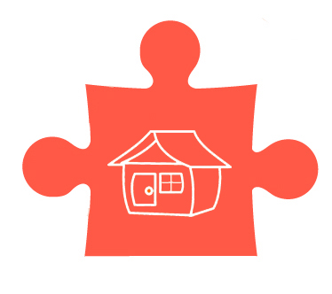
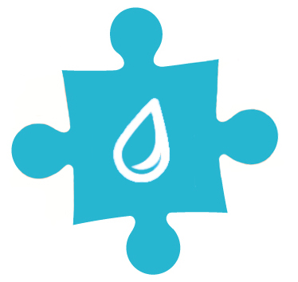
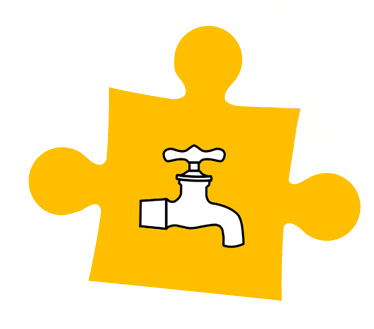
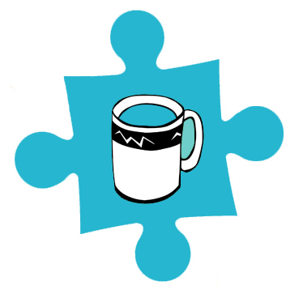
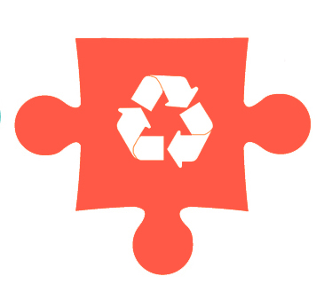

Etapy powstawania wody pitnej

Stacja Uzdatniania Wody: Pobór i oczyszczanie/uzdatnianie wody surowej z wykorzystaniem urządzeń zainstalowanych na stacji uzdatniania wody; interaktywne uruchamianie pracy pompy głębinowej, filtrów i zbiornika wody czystej

Dystrybucja wody – sieć wodociągowa doprowadzająca wodę do odbiorców; skład wody uzdatnionej, czynniki wpływające na zmianę parametrów wody

Konsumpcja – zużycie wody przeznaczonej do spożycia; gdzie i ile wody zużywamy, w jaki sposób powodujemy straty wody

Woda zużyta – ścieki; gdzie trafia zużyta woda i co się z nią dzieje; czynniki wpływające na sieć kanalizacyjną

Oczyszczalnia ścieków – proces oczyszczania ścieków pochodzących z terenu gminy
z uwzględnieniem każdego etapu oczyszczania stosowanego na Oczyszczalni ścieków w Warcie; interaktywne uruchamianie poszczególnych procesów
Wprowadzanie ścieku oczyszczonego do środowiska naturalnego; znaczenie jakości ścieku oczyszczonego i zagrożenia dla zasobów wodnych